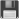

Essential privacy (and other) addons
- Introduction -- Recommended privacy addons -
- uMatrix -
- WebRTC Control -
- Decentraleyes -
- Smart HTTPS -
- Block Cloudflare MITM Attack -
- Redirect Bypasser -
- Single ClickClearer -
- Inferior privacy addons -
- KB SSL Enforcer -
- HTTPS Everywhere -
- uBlock Origin, AdBlock Plus, AdGuard, Disconnect, etc. -
- NoScript -
- Privacy Badger -
- Ghostery -
- LibreJS -
- VPN addons -
- Proxy switchers
- Other useful addons -
- Saka Key -
- I don't care about cookies -
- LinkBot -
- Archiveror -
- Stylus -
Introduction
If you've read the article How to choose a browser for everyday use, you know that most of their functionalty comes from extensions. So much that, if you've had certain ones for a long time, a browser will seem unusable to you without them. But which ones should we choose, and which ones to avoid? That's exactly what you will learn in this article.
Recommended privacy addons
uMatrix
Simply THE most important addon out there, and one I won't go on the Internet without. To understand why, let's explore how the Web actually works. Every time you visit any website, you are making a request to it. A website can consist of many files, such as image, style files, or scripts (which can ALSO make their own requests). To complicate matters, it can also make connections to other websites (these are called third-party requests). So, by visiting one website you can end up with hundreds of all types of requests. Now, most privacy issues in the end reduce to a browser making a request with the intention of data collection. The prevention of spying, then, would have to include disabling certain kinds of requests. Okay, but what does uMatrix have to do with all that?
uMatrix divides all requests into eight categories: Cookies, CSS (style files), image, media (audio and video files), scripts, XHR (requests made by scripts), frames (embedding other sites), and other (anything else). And then into two other categories: first and third party. What does this mean? Simply, certain types of requests are much more likely to be privacy intruding than others, and uMatrix allows disabling them globally, and then enabling them only on certain websites that you choose.
The requests most responsible for spying are the third party ones, especially scripts. So let's go and block them all. Now any website that contains a facebook script cannot spy on you anymore - but if you allow FIRST PARTY scripts, you can still use Facebook - it just can't spy on you elsewhere. Another example - Google's ReCaptcha. You might want to globally allow it - OR, if you don't care about it except you need to access some website just once - allow it only for that website.
However, tracking prevention is not the only use of uMatrix. Removing clutter ("ads"), annoying popups pestering you to "sign up", video embeds, etc. are all possible. And if you realize you want video embeds on your favorite website, but not elsewhere, you can just allow them there. The best thing about uMatrix is that you can globally block everything with it, and only allow it when and where you need it. It gives you almost complete control over your browsing, and with an intuitive interface too. Of course it will take a while to learn and configure it the way you want to, but for that level of power, it's worth it - and you can go gentle at first - just blocking third-party scripts and cookies will do a lot. Without this addon, that power would be in the hands of trackers and advertisers again - you'd see what and when they want you to see. Now there are other addons providing some of the same functionality, but they are hugely inferior, as we will see later. Available for both Chrome and Firefox based browsers (Pale Moon uses the eMatrix fork).
WebRTC Control
If you use Tor or certain VPNs, this WebRTC technology enabled by default in most browsers will leak your IP address, making your masking tools irrelevant. This extension will give you a button to one-click disable (or enable) WebRTC and prevent the leaks. Available for both Chrome and Firefox based browsers (Pale Moon automatically disables WebRTC IP leaks, so does not need the extension).
Decentraleyes
Another simple addon. There are certain scripts that are required for many websites to work (jQuery, some google scripts, etc..), but they also spy on you. How to get out of this? Store them locally and connect to those instead! And that's all Decentraleyes does. Can conflict with uMatrix. How to solve this? Briefly, you can't allow uMatrix to "steal" the requests that Decentraleyes replaces, so allow those domains in uMatrix (these rules should work). The HTTPs enforcing addons can also try to steal its requests - installing Decentraleyes AFTER them will prevent that. Available for both Chrome and Firefox based browsers, as well as Pale Moon. Okay, these were the only three privacy extensions I consider essential (and WebRTC only for Chrome based browsers, so FF can survive with just two). But read on for some toys that could still be useful.
Smart HTTPS
A very simple addon. Assumes all websites support SSL and connects to them that way. If it detects an error (as in, the site does not support SSL) it falls back to regular HTTP. This way, an unencrypted request is never made if possible. Note: sometimes this addon will erroneously add a site to the list not supporting HTTPS, for example if there is a network error. You can remove if from the whitelist then to recheck. This addon, therefore, does not provide perfect protection against unencrypted requests by default, but it is better than the alternatives. However, you can disable automatic whitelisting, and then it will recheck the connection everytime. This, as far as I can see, does provide perfect protection. Available for both Chrome and Firefox based browsers. If you want to use this in Pale Moon, you will need to download an old version from the Classic Add-ons Archive, since the newest one is WebExtensions.
Block Cloudflare MITM Attack
Since every Cloudflare website decrypts your SSL connections, it might be useful to know when it's happening. This extension will light up a cloud icon if the site you're on has CF. More than that - thanks to the in-built site list, it allows you to avoid the MITM by either blocking the connections or redirecting them to the Wayback Machine. Available for both Chrome and Firefox based browsers. Unfortunately, Pale Moon has no alternative that I could find, and BCMA's devs refuse to support it (archive).
Redirect Bypasser
This handy extension gets in-between any middlemen trying to track / censor the links you want to visit, bypassing annoyances such as Steam link filters and sending you directly to the destination. So, https://steamcommunity.com/linkfilter/?url=https://digdeeper.neocities.org/ would become https://digdeeper.neocities.org/. Redirect Bypasser has quite a lot of possible configuration, but the default settings work very well - except you might want to switch Behavior from 0 to 1, so that the actual redirects don't need the context menu. Available for Chrome (drag and drop CRX file to extension page), Firefox and Pale Moon.
SingleClick Cleaner
Not much of a privacy addon, but very convenient. Allows you to specify what data will get cleaned (cookies, downloads, browsing history, etc...except, apparently, zoom levels memory) and then trash it with one click whenever you want to. Not available for Firefox-based browsers, but some alternatives exist (not sure if they are as good though). Unfortunately, no real Pale Moon replacement.
Inferior privacy addons
KB SSL Enforcer
Used it for a long time, but recently looked at the FAQ which states "KB SSL Enforcer detects SSL on the very first visit to a page and is unable to block the unencrypted request from going through while this is happening.". So the first unencrypted request is not prevented. Outclassed by Smart HTTPS.
HTTPS Everywhere
Works according to a list, so if a site isn't on that list, the request will not be redirected to SSL. Outclassed by Smart HTTPS, which will always use SSL if available.
uBlock Origin, AdBlock Plus, AdGuard, Disconnect, etc.
A huge, constantly updated, list of blocked elements is required for these to work. For example, AdGuard prides itself on having more than 1,800,000 malicious websites on record.
Not something I would brag about, when it's so simple to just block entire class of requests via uMatrix, rendering most of these adblockers irrelevant. By using them, you are also relying on someone else to provide you with the lists, instead of taking your web browsing into your own hands. If something isn't on these lists, it will not be blocked, and you cannot possibly make a list that will capture everything ever. Advertisers have also been ferociously fighting these lists for a long time now (BlockAdBlock, etc.). This has then spawned userscripts and such that block BlockAdBlock, which the advertisers have again responded to..uMatrix just sidesteps this whole dumb war. With a properly configured uMatrix, you don't need to care about what tricks the trackers or advertisers have got up their sleeves, since it will all be blocked until you choose otherwise ("default deny" versus "default allow" policy). Adblockers are easier to use (install and go..), but in the end, outclassed by uMatrix, if you take the time to learn it. If you really want a list-based extension, Disconnect is the least worst. It has a nice UI and shows you the saved bandwidth and time, as well as a tracker visualization mode. But really, learn uMatrix. Note on uBlock Origin: it has some additional features like element hiding and disabling WebRTC - but for basic content blocking, uMatrix is king.
NoScript
Malicious and dishonest! (archive) Also outclassed by uMatrix anyway, since it only allows global disabling of certain scripts, without taking into account where the requests are coming from (so you can't block script X on one website and allow on another). It doesn't support Chrome-based browsers, either...(update: now does, still sucks)
Privacy Badger
Probably the worst of all the "privacy protecting" extensions, even though it appears the most advanced, using AI to detect trackers. However, it requires a really long time to find anything (you'd learn uMatrix three times over...), and most of them will still go unnoticed. As it says, Privacy Badger looks for tracking techniques like uniquely identifying cookies, local storage "supercookies," and canvas fingerprinting.
But these are three out of many more tracking ways, and PB will miss the rest. Also, PB only cares about tracking, but there are many other things you may want to block. Maybe you don't want random Twitter images on the sites you're browsing (and you can be tracked by those anyway). The funny thing is, PB enforces the sending of the Do Not Track header, which actually provides a way to track you (worsens your fingerprint). Ignore the fancy stuff and use uMatrix, the only content blocking extension you need.
Ghostery
Another really poor addon. It displays the amount of trackers a website contains, and then uses an algorithm to block only some of them. It leaves alone, for example, DoubleClick, social media buttons, Google AdSense, many analytics sites, and others. You can choose to block some or all of these on certain or all sites, but by default, only the ones chosen by the algorithm are blocked. Another function of Ghostery is adblocking, which works the same way, but this time it doesn't even tell you which ones were blocked. You can "restrict site" so that all trackers on it will be blocked, but that option does not work for ads, so some will get through regardless. And you have to do that separately for every site. Ghostery also shares something called "Human Web Data" with its parent company Cliqz by default. No matter, uMatrix is superior.
LibreJS
Now let's be clear here - this addon has nothing whatsoever to do with privacy, functionality, convenience, or anything benefiting the user. It only serves to satisfy a particular brand of autism called freetardism. So what even is this addon? Well, it was supposed to block "nonfree and nontrivial" JavaScript on sites, but the criteria are confusing and imprecise. LibreJS will check whether a "free license" has been applied to a script, and if not, whether it is "trivial" enough for the license to be ignored. This heavily slows down your browsing, since it has to check every script on the site according to a bunch of rules for "triviality". And if you click on the LibreJS button, it will show you a barely human-readable dump of data allegedly showing which scripts are "nontrivial" and have been blocked by the addon. You can whitelist them then - a Sisyphean job if I ever saw one. Also, if a script has been blocked, a giant "COMPLAIN" overlay will appear to get you to contact the website devs so that they can remove the offending scripts (has that ever worked?). Sounds like a crusade I don't want to be a part of. uMatrix is so much cleaner, faster (actually significantly speeds up your browsing), more powerful, and actually serves the user instead of an ideology. Ditch the gimmicks, get uMatrix!
 Proxy / "VPN" extensions
Proxy / "VPN" extensions 
Like Browsec, Hola, PureVPN, ZenMate, Tunnelbear and many, many others. Not only are these leaky (archive), but they are not even real VPN. This means only certain requests get tunneled (those you make through your browser). On top of that add other issues such as bandwidth limits, requiring payment after a free trial, pestering you with popups, or even operating like a literal botnet (archive) - and you realize you don't want to use these, ever. Just get a real VPN - good free ones are available such as SigaVPN or RiseUp.
Proxy switchers
These are not bad extensions at all - I even used to recommend Proxy SwitchyOmega. The problem is that using a VPN for all connections simply outclasses fucking around with different proxies (Tor included), thus making these addons irrelevant.
Other useful addons
Saka Key
Allows the modification of keyboard shortcuts (a feature actually missing by default in both Chrome and Firefox! Even freaking elinks has it..). But more importantly, it provides a way of visiting links without using the mouse. Press F (in power mode) to display a sequence of letters over every link on a website, then press that sequence. Boom! You're browsing fully with the keyboard. Very useful if you only have one free hand, or are on a laptop with a shitty touchpad. Available for both Chrome and Firefox based browsers. Vimium (from Classic Addons Archive) is the Pale Moon alternative which is even better.
 I don't care about cookies
I don't care about cookies
Some time ago, the EU came up with some bullshit requirement for websites to pester you with cookie "information" that you already know, which just so happens to covers up a big part of the screen. This addon will remove those overlays. Of course, uMatrix also gets these if you disallow scripts on these sites, but if you need the functionality provided by scripts (for example on flashscore), then this addon is extremely useful. Available for both Chrome and Firefox based browsers, as well as Pale Moon. Note: can break sites too (Neocities delete button for example).
LinkBot
Turns any non-clickable link into clickable (for example, ones without http:// typed, or emails). No more copying them into the address bar! Very convenient. This used to be Clickable Links, but I've noticed it does not convert some of them, so I've searched for something better, and here it is. Not available for Firefox-based browsers - Linkificator is the alternative. Note: breaks a few sites, like those relying on RainLoop login form.
 Archiveror
This extension provides a way to quickly archive the current page at archive.fo, web.archive.org, perma.cc or webcitation.org. Using a keyboard shortcut (Alt+Shift+Y) is also possible. An older version is available for Pale Moon through the Legacy Addons Archive.
Stylus
A fork of an older Stylish version, before it became spyware (archive). This extension allows you to create custom CSS for every website you visit, and enable or disable them at will. You can test it out on this site by downloading the styles I link to on the main page. Simply click the name of the theme, copy the contents, click the Stylus icon and "Write style for digdeeper.neocities.org". Then paste the CSS there and click Save. Now visit my site again and you will see the look change; you can have all the styles installed at once and choose whichever you want at any time. Very convenient and available for both Chrome and Firefox based browsers (Pale Moon uses the Stylem fork). This extension can also double up as an adblocker that will get things even uMatrix can't (by way of element hiding). For example, StartPage ads can be blocked with the style:
@namespace url(http://www.w3.org/1999/xhtml);Back to the front page
@-moz-document domain("startpage.com") {
#adBlock {
display:none;
}
}